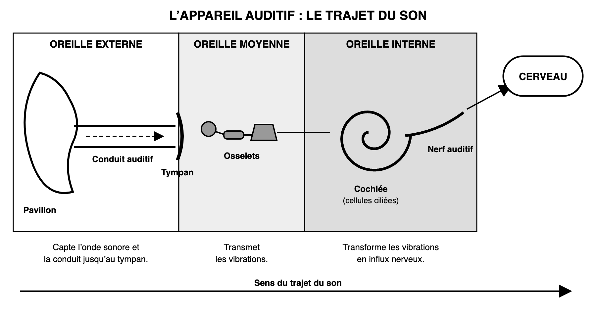
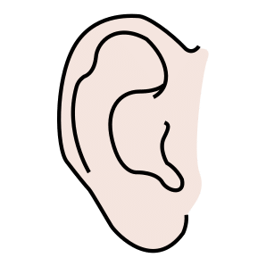
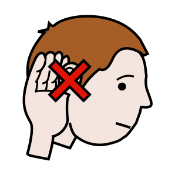
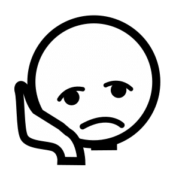
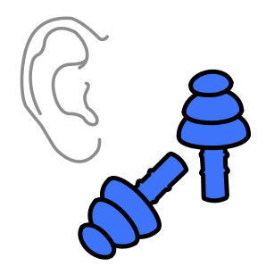

Thématique B · CAP
Fiche de révision B4 — Le bruit au quotidien
Révise en t'amusant, puis télécharge ta fiche
Fais défiler la page : les notions apparaissent une à une. Touche les cartes pour les retourner, fais glisser le curseur des décibels, regarde le trajet du son, puis réponds aux questions « Je vérifie mes acquis » à la fin de chaque partie.
1. Le son et le bruit
Touche une carte pour voir sa définition.
2. L'échelle des niveaux sonores
0 dB(A)seuil d'audibilité
50 dB(A)conversation
80 dB(A)seuil de nocivité
102 dB(A)concert (max.)
120 dB(A)seuil de douleur
50 dB(A)
Plus le niveau sonore est élevé, plus le bruit est dangereux. Le seuil de nocivité vaut pour 8 heures par jour.
3. Le niveau sonore et la durée d'exposition
Durée d'écoute sans risque, par semaine (OMS) :
80 dB(A)
40 h
40 h
85 dB(A)
12 h 30
12 h 30
90 dB(A)
4 h
4 h
95 dB(A)
1 h 15
1 h 15
100 dB(A)
20 min
20 min
Le risque dépend du niveau sonore ET de la durée d'exposition.
Plus le niveau sonore augmente, plus la durée d'écoute sans risque diminue.
Plus le niveau sonore augmente, plus la durée d'écoute sans risque diminue.
4. L'appareil auditif : le trajet du son
Appuie sur « Lancer le son » ou avance étape par étape.

Le son arrive de l'extérieur…
Les cellules ciliées de la cochlée transforment les vibrations en influx nerveux ; le nerf auditif le conduit au cerveau.
5. Les effets du bruit sur la santé

La fatigue auditive
Sifflements ou bourdonnements : les acouphènes, et une baisse de l'audition. Elle disparaît avec le repos, si l'exposition au bruit ne recommence pas.
La surdité
Un bruit intense et prolongé détruit les cellules ciliées. Elles ne se réparent pas : la perte d'audition est définitive.Les effets extra-auditifs : sur le reste de l'organisme

La fatigue

Le stress

Les troubles du sommeil

Moins de concentration
Conséquences : isolement et conflits avec l'entourage ; au travail, baisse de la concentration, signal d'alarme masqué, accidents.
6. Protéger son audition

Réduire le volume
Écouteurs à 60 % au plus du maximum ; s'éloigner des enceintes et des machines.
Limiter la durée
Écouter moins longtemps et faire des pauses.
Se protéger
Bouchons d'oreilles ou casque antibruit, bien mis et portés pendant tout le bruit.Réagir
Sifflement ou baisse d'audition qui persiste après un bruit très fort : consulter en urgence à l'hôpital.7. La réglementation

Au travail
L'employeur réduit le bruit, d'abord à la source.Au-dessus de 80 dB(A) sur 8 h : il met à disposition des protecteurs et forme les salariés.
Au-dessus de 85 dB(A) : il signale les zones bruyantes et contrôle le port des protecteurs.

Concerts et discothèques
102 dB(A) au plus, en moyenne sur 15 minutes.L'organisateur informe le public des risques, donne gratuitement des protections auditives et crée des zones de repos auditif.
8. Les bruits de voisinage

Le comportement civique
Limiter le bruit que l'on fait : baisser la musique, prévenir ses voisins avant une fête.La répression
Bruit anormal par son intensité, sa durée ou sa répétition, de jour comme de nuit : constat de la police, amende de 68 €.Les pièges à éviter
Touche la carte pour voir la bonne réponse.
Je vérifie mes acquis : 0 / 16